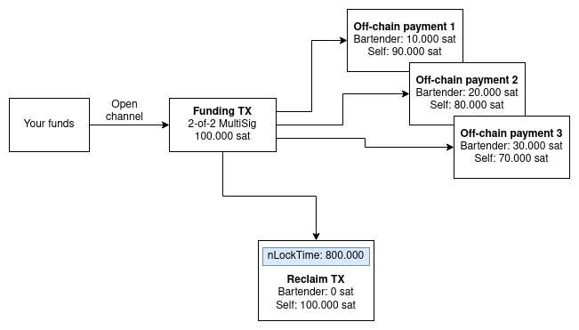
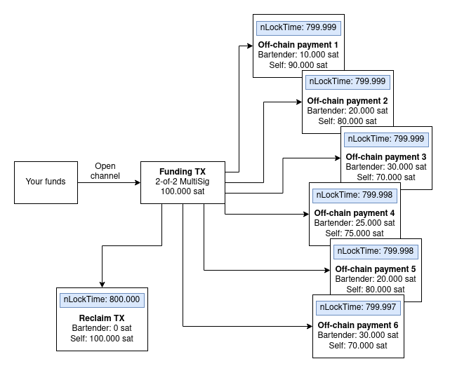
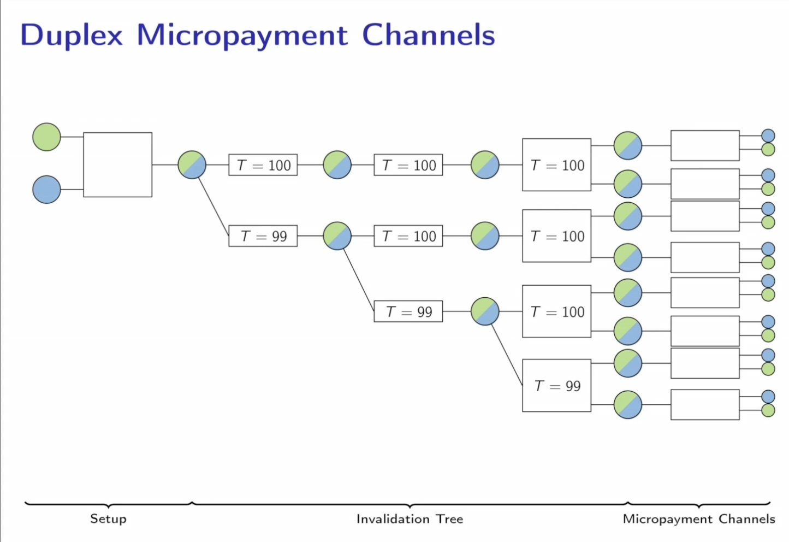
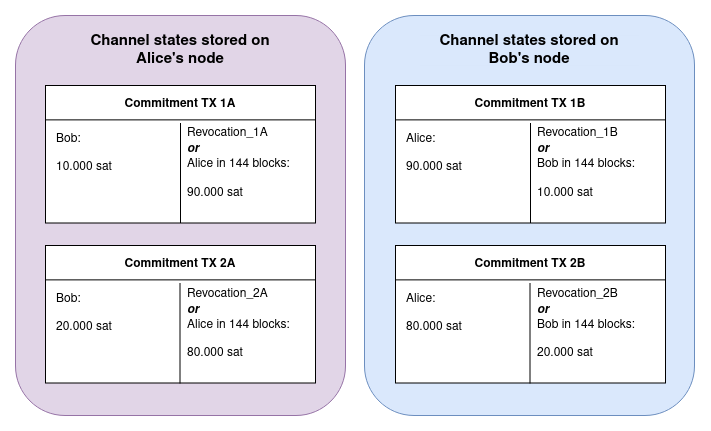

Intermediate ideas and implementations
After Satoshi's flawed idea, a lot of innovation happened on payment channels
Spilman | Channel lifecycles
With Spilman channels we can already see the emergence of the payment channel lifecycles which subsist until today:
- Channel setup phase | on-chain
- Payments through channel | off-chain
- Channel closing | on-chain
Spilman | Setup phase
- You craft a setup TX that sends funds to a 2-of-2 MultiSig controlled by bartender and yourself
- You DON'T publish that TX yet
- You craft a TX that sends all the funds within the setup transaction back to you at nLockTime T
- You ask the bartender sign that closing TX for you
- Now that you have a security to reclaim your funds, you publish the setup TX
- Wait for the TX to confirm on the blockchain
- The channel is now setup and can be used until nLockTime T
Spilman | Payments phase
- You start spending crafting TXs that spend the funding TX
- You spend it such, that some funds go to the bartender and some go to yourself
- You craft one such TX for each off-chain payment
- You sign these TXs and pass them to the bartender
- He could publish these TXs at all times, but he does NOT
Spilman | Payments phase

Channel closing
- Bartender signs and publishes the last channel state (which is most lucrative to him)
- He must do that before the channel expires!
- If the channel hasn't been used at all, you sign and publish the Reclaim TX
Conclusion
- Miner collusion is fixed
- Payments can still only flow into one direction
- Payment channel still has a limited lifetime
- A channel lifetime still needs to be committed to in advance
- Bartender needs to act before channel expires
Incentives rather than nSequence
Why is it that the newest channel state is being published?
- Order is NOT enforced by miners through nSequence
- Bartender publishes newest state because it is the most lucrative for him
- You cannot sign any state because you don't have the bartenders signature
- Premature publishing of Reclaim TX is prevented by nLockTime
Questions?
Any questions so far?
SegWit required
Spilman channels and other proposals required SegWit to fix transaction malleability
SegWit was activated in 2017
Bi-directional payment flows
- A naive solution to allow for bi-directional payment flows is to simply create 2 channels in the opposite direction respecitively
- Problem: You cannot send the funds you received, instead you need to close and reopen channels.
- Money within a channel can only be transferred once
Problem
The already existing problem of the limited lifetime of a channel gets even worse!
Bi-directional channels
Alex Akselrod had the idea to let funds flow bi-directionally in channels by using decreasing nLockTimes.
Bi-directional channels

Duplex Micropayment Channels (DMC)
- Decker and Wattenhofer published a proposal that also heavily relies on time locks
- Paper was released in October 2017
Duplex Micropayment Channels (DMC)

Adding trust
Various proposals integrated limited forms of trust to solve various problems
Questions?
Any questions so far?
Characteristics
- Bi-directional payment flows
- Unlimited lifetime
Channel setup
- The funder crafts a setup TX that sends funds to a 2-of-2 MultiSig controlled by funder and remote
- He only publishes the funding TX once he has a signed reclaim TX
- The opened channel can be used indefinitely
The revocation key
- Uses ECC magic (details)
- Revocation key pair is crafted collaboratively between Alice and Bob
- Bob only accepts a new payment state, when Alice provides him with the data he needs to be able to construct the revocation key pair
- Bob knows the revocation key pairs, but only for old states
- Nobody knows the revocation key pair for the current state
Penalty transaction
When Alice publishes an old channel state, Bob has 144 blocks to claim all the funds in the channel
Alice needs protection too!
Bob stores channel states with the same scheme, but mirrored
Commitment TXs per peer

Recap
- For the curent channel state X, both Alice and Bob have a transaction for which some part could be claimed with the revocation private key
- But nobody knows the entire revocation private key yet
- Alice and Bob only sign a new channel state, if they get the information they need to derive the revocation private key from their channel partner
- This kind of invalidates the old state
- If you publish an old state, you risk losing all your funds in that channel
Channel reserves
- For the penalty transaction incentive to work, skin in the game is required
- If all the balance within a channel belongs to Bob, he can't effectively punish Alice
- Bob could punish her and take all the money, but it's not a punishment because it already belongs to him
- That's why usually you cannot spend your full Lightning balance of a channel
Output scripts
to_remote output (Bolt 3)
<remotepubkey> OP_CHECKSIGVERIFY 1 OP_CHECKSEQUENCEVERIFY
Output scripts
to_local output (Bolt 3)
OP_IF
# Penalty transaction
<revocationpubkey>
OP_ELSE
`to_self_delay`
OP_CHECKSEQUENCEVERIFY
OP_DROP
<local_delayedpubkey>
OP_ENDIF
OP_CHECKSIG
Requirement to be online
- Node has time of X blocks to release a penalty TX
- Must watch the blockchain to see wether an old state has been published
Questions?
Any questions so far?
Optional: Repurpose of nSequence field
Optional
Optional: Anchor channels problem
Optional
Optional: SegWit
Optional
Optional: Taproot
Optional